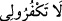

“Bana şükredin” emrinden sonra “Bana nankörlük etmeyin” denmeseydi bir kez
veya tek bir nimete şükreden kişinin âyetin hükmüyle amel etmiş olduğu sanılırdı.
Sadece “Bana nankörlük etmeyin.” denmiş olsaydı, o takdirde iyi ameller yapmaya
teşviki bir tarafa bırakarak, sadece kötü işlerden nehyettiği vehmi ortaya çıkardı. Bu
sebeple hem her iki yanlış anlaşılmayı ortadan kaldırmak, hem de “nankörlük
etmeyin.” sözünde şükrü terketmenin nankörlük olduğunu belirtmek için Allah Teâlâ,
her iki ifâdeyi birleştirerek “Bana şükredin. Sakın nankörlük etmeyin.” buyurmuştur.
Niçin (
) yerine (
) ifâdesini kullanmıştır? sorusuna şöyle cevap
verilebilir:
Nimetlerine nankörlük etmeye nisbetle, Allah’ın zâtına nankörlük etmek daha büyük
suçtur. Zira Allah, nimetlere yapılan nankörlüğü affedebilir, fakat kendine yapılanı
affetmez. Rağıb el-Isfahânî’nin tefsirindeki cevap böyledir.
Ulemâdan biri şöyle demiştir: Allah Teâlâ, İsrâîloğulları’na vermediği basîret ve
anlayış üstünlüğünü, bu ümmete vermiştir. Çünkü onlara: “Ey İsrâîloğulları! Size
verdiğim nimetleri hatırlayın...” (el-Bakara 2/40) buyurarak unutup farkında
olmadıkları nimetlerini hatırlamalarını ve bu yolla nimet vereni düşünmelerini emrettiği
halde, Hz. Muhammed (s.a.)’ın ümmetinden basiretlerinin kuvvetinden dolayı “Beni
anın.” diyerek, vâsıta olmaksızın kendisini zikretmelerini istemiştir.
Sâib şöyle der:
Mayası toprak olan her insanda Hallâc neş’esi bulunmaz.
Her çanak çömlek parçasından fağfur sadâsı duyulmaz.
İmâm Gazzâlî şöyle demiştir: Zikir bazen dil ile, bazen kalb ile, bazen de âzâlarla
olur. Dil ile Allah’ı zikir; O’na hamd, O’nu tesbîh ile yüceltmek ve kitabını okumaktır.
Kalb ile zikir üçe ayrılır:
1. Allah’ın zâtına ve sıfatlarına delâlet eden delilleri düşünmek ve O’nun mülkü
hakkında kalbe doğan şüphelere cevap aramaktır.
2. O’nun teklif ve hükümlerinin, emir ve yasaklarının vâd ve vaîdlerinin keyfiyetini
açıklayan delilleri düşünmektir. Çünkü tekliflerin mâhiyetini anlayınca ve emirleri tutup
yasaklardan kaçınmanın doğuracağı neticeyi bilince iş yapmak insana kolay gelir.
3. Her bir zerresi âlem-i kuds’ü yansıtan parlak birer ayna oluncaya kadar Allah’ın
mahlûkatının esrârını tefekkür etmektir. Kul, o aynaların her birine baktıkça celâl
âleminde olanları seyreder. Bu ise nihâyeti olmayan bir makamdır.
Âzâlarla zikir, bedenin bütün organlarının, Allah’ın emirlerini yerine getirme ve
yasaklarından sakınma husûsunda hareket hâlinde bulunmasıdır. Nitekim Allah Teâlâ:
“Allah’ın zikrine koşun.” (el-Cum’a, 63/69) âyetinde namazı, zikir olarak
isimlendirmiş ve “Beni zikredin.” emrinin bütün tâat ve ibâdetleri içine aldığını
belirtmiştir.
Saîd b. Cübeyr (r.a.), “Beni anın!” âyetinin “Beni tâatımla anın.” mânâsında